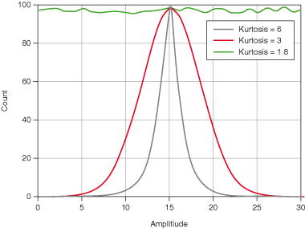

Kurtosis is a measure of peakedness and corresponds to the fourth-order moment.
When determining kurtosis, normal distribution has a kurtosis value of 3. A kurtosis value of less than 3 indicates a flatter distribution than normal. A kurtosis value of greater than 3 indicates a sharper distribution than normal. The following figure shows three distributions with kurtosis values of 6, 3, 1.8.
